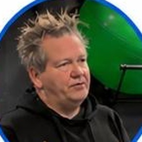
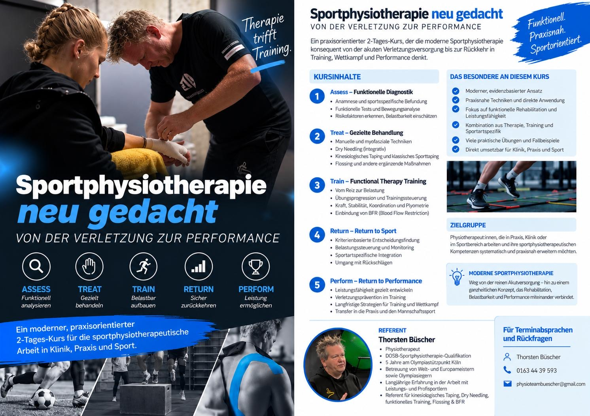

Sportphysiotherapie neu gedacht
Von der Verletzung zur Performance
Der Gedanke
Die Behandlung endet nicht, wenn der Schmerz weg ist.
Viele Fortbildungen drehen sich um eine einzelne Technik. Im Sport reicht das nicht.
Wer Athlet:innen nach einer Verletzung betreut, muss befunden, behandeln, Belastung aufbauen und am Ende eine Entscheidung treffen: Wann geht es zurück auf den Platz? Diesen Weg geht der Kurs an zwei Tagen komplett durch. Vom ersten Befund bis zur Rückkehr in Training und Wettkampf.
Funktionell. Praxisnah. Sportorientiert.
Kursinhalte
Assess. Treat. Train. Return. Perform.
Fünf Phasen, die aufeinander aufbauen. Zu jeder gibt es Hintergrund, Demonstration und viel Zeit zum Selbermachen.
-
01
AssessFunktionelle Diagnostik
- Anamnese und sportspezifische Befundung
- Funktionelle Tests und Bewegungsanalyse
- Risikofaktoren erkennen, Belastbarkeit einschätzen
-
02
TreatGezielte Behandlung
- Manuelle und myofasziale Techniken
- Dry Needling (integrativ)
- Kinesiologisches Taping und klassisches Sporttaping
- Flossing und weitere ergänzende Maßnahmen
-
03
TrainFunctional Therapy Training
- Vom Reiz zur Belastung
- Übungsprogression und Trainingssteuerung
- Kraft, Stabilität, Koordination, Plyometrie
- BFR (Blood Flow Restriction) sinnvoll einbinden
-
04
ReturnReturn to Sport
- Entscheidungen anhand klarer Kriterien
- Belastungssteuerung und Monitoring
- Sportartspezifische Integration
- Umgang mit Rückschlägen
-
05
PerformReturn to Performance
- Leistungsfähigkeit gezielt weiterentwickeln
- Verletzungsprävention im Training
- Strategien für Saison und Wettkampf
- Transfer in Praxis und Mannschaftssport
Im Kurs
Wenig Folien.
Viel Liege.
Der Kurs ist für den Alltag gebaut: Was Sie an zwei Tagen üben, können Sie am Montag in der Praxis, in der Klinik oder am Spielfeldrand anwenden.
- Aktuelle Evidenz, übersetzt in Entscheidungen am Patienten
- Techniken zum Mitnehmen, sofort anwendbar
- Reha bis zur vollen Leistung gedacht, nicht nur bis zur Schmerzfreiheit
- Therapie, Training und Sportart in einem Konzept
- Echte Fälle aus Leistungs- und Breitensport
- Für Klinik, Praxis und Verein gleichermaßen
Für Physiotherapeut:innen, die mit Sportler:innen arbeiten. Oder das künftig wollen.
Aktive Patient:innen strukturiert vom Befund bis zur vollen Belastbarkeit führen.
Rehabilitation funktionell denken und den Schritt ins Training sauber planen.
Akutversorgung, Return to Sport und Prävention im Team- und Leistungssport.
Für Schulen & Akademien
Ein Kurs, der bei Ihnen stattfinden kann.
Das Konzept ist fertig ausgearbeitet. Der Referent kommt aus dem Leistungssport.
Sie suchen eine sportphysiotherapeutische Fortbildung für Ihr Programm? Rufen Sie an oder schreiben Sie kurz. Wir sprechen über Termin, Räume und Gruppengröße, danach bekommen Sie ein konkretes Angebot.
Anfrage stellenKursdatenblattSPT · 2 Tage
- Titel
- Sportphysiotherapie neu gedacht. Von der Verletzung zur Performance
- Umfang
- 2 Kurstage
- Format
- Präsenz, Theorie und viel Praxis
- Aufbau
- Assess · Treat · Train · Return · Perform
- Zielgruppe
- Physiotherapeut:innen aus Praxis, Klinik und Sport
- Referent
- Thorsten Büscher, DOSB-Sportphysiotherapeut
- Ort
- In Ihren Räumen
- Ausstattung
- Behandlungsliegen und Trainingsfläche, Details vorab
- Termin, Gruppe, UE
- Nach Absprache
- Bewerbung
- Kursflyer liegt vor (Download)


Referent
Thorsten Büscher
Physiotherapeut aus Köln. Fünf Jahre am Olympiastützpunkt. Hat Welt- und Europameister und Olympiasieger betreut.
- Physiotherapeut mit DOSB-Sportphysiotherapie-Qualifikation
- 5 Jahre am Olympiastützpunkt Köln
- Betreuung von Welt- und Europameistern sowie Olympiasiegern
- Langjährige Arbeit mit Leistungs- und Profisportlern
- Referent für kinesiologisches Taping, Dry Needling, funktionelles Training, Flossing und BFR
Stimmen
Was Teilnehmende sagen
Hier steht die Rückmeldung einer Teilnehmerin oder eines Teilnehmers. Zum Beispiel, was am meisten für die eigene Arbeit gebracht hat.
Platz für eine zweite echte Rezension, gern zu den praktischen Inhalten wie Taping, Dry Needling oder Return to Sport.
Platz für die Rückmeldung einer Akademie oder Fortbildungsschule, die den Kurs bereits angeboten hat.
Sie waren im Kurs? Schicken Sie mir Ihr Feedback.
Kontakt
Termin abstimmen
Am schnellsten geht es am Telefon. Oder Sie schreiben kurz, worum es geht.
0163 44 39 593 physioteambuescher@gmail.comThorsten Büscher

Kursflyer herunterladen